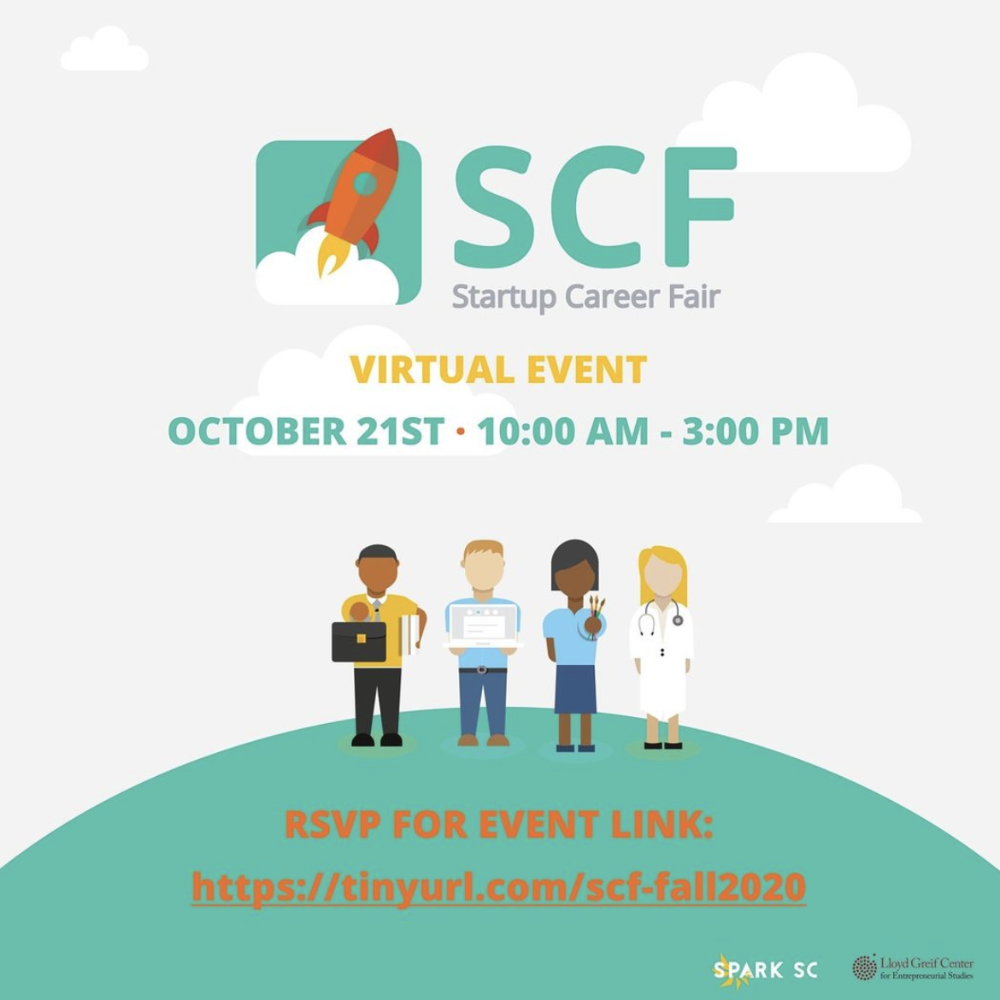
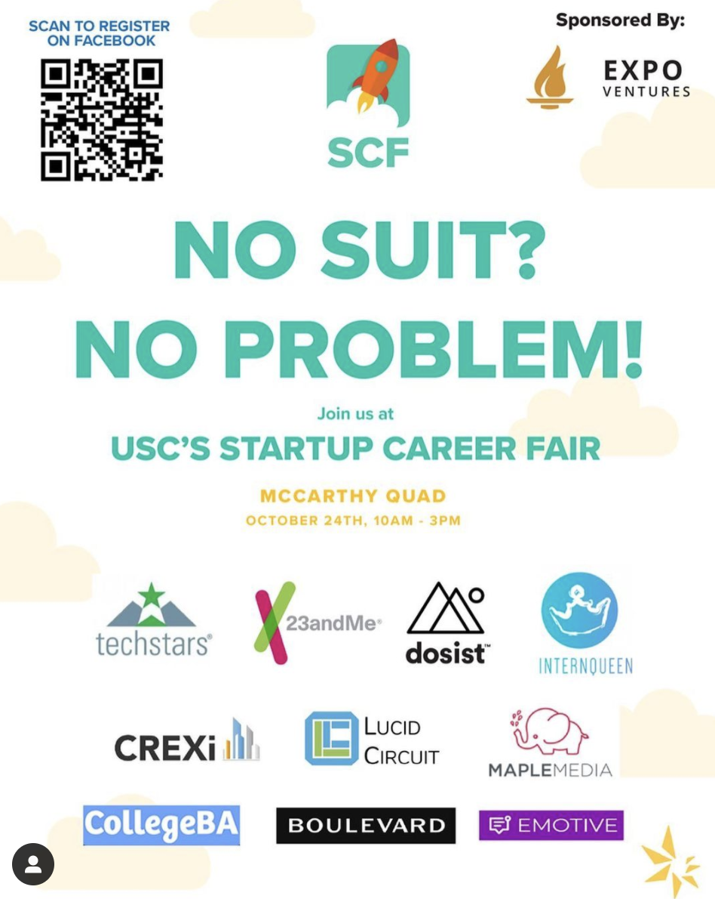
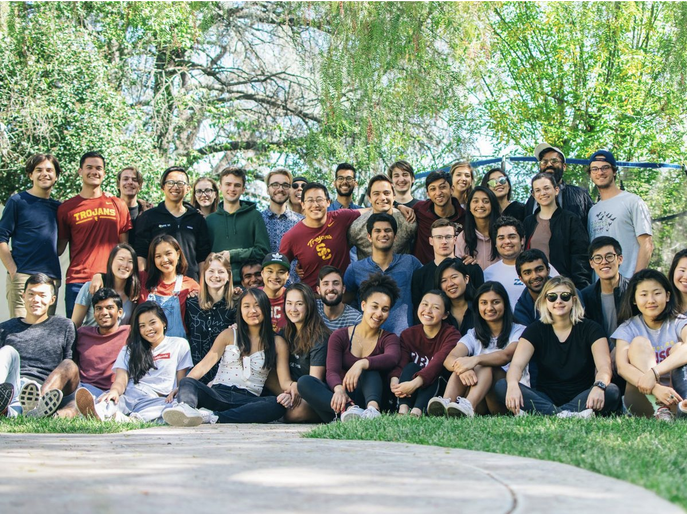

Spark SC
Core Team LeadTeam - Spark SC, Core Team members
Team - Spark SC, Core Team members
1000 Pitches is USC's largest pitch competition with student's pitching from all over. For one month, students have the opportunity to pitch their idea for a chance to go to the final ceremony and win seed money! In the fall of 2019, I joined the 1KP team to help plan the event. In the Spring, I became the lead for 1KP. During this time, I was in charge of all aspects of 1KP including funding, marketing, planning the final event, and building a pitch booth. Unfortunately, Corona struck and my time as the lead for 1KP ended.
However, in the fall I became the advisor for 1000 Pitches for two younger leads. We were able to successfully execute the first virtual pitch competition! It was amazingly and we had 10 winners at the final ceremony and over $4000 in prizes.
Project Launch is another staple initiative for Spark SC. Every spring, we put on a class for USC Hybrid High students to come and learn basic entrepreneurship skills. We hold the class twice a week for two hours and teach the high school students how to use Microsoft Office, build a portfolio, pitch an idea, code an app, and much more. My first semester in Spark, I helped plan and execute this event by creating the curriculum for the students and being a mentor throughout.
Startup Career Fair is our most popular and impactful initiative currently as we bring in over 40 startups each semester for a career fair. I have worked on Startup Career Fair for two semesters. Every semester, we invite the hottest startups in LA to come to USC and recruit students. This event is extremely popular for both startups and students. This semester we held the first online Startup Career fair! During my time on SCF, I was in charge of fundraising to pay for our costs, recruiting startups, and hammering out the logistics for the event.
  The Spark SC community is the strongest aspect about it. Throughout my time in Spark, I have made lifelong friends, met amazing mentors, and create a strong support system. Every one in Spark is bound together by the same goal: to give everyone the opportunity to innovate and create. This goal of spreading entrepreneurship all over has sprouted so many amazing ideas and we constantly bond over these ideas. This community has some of the smartest people across the nation and I am lucky to be able to learn from them everyday.
